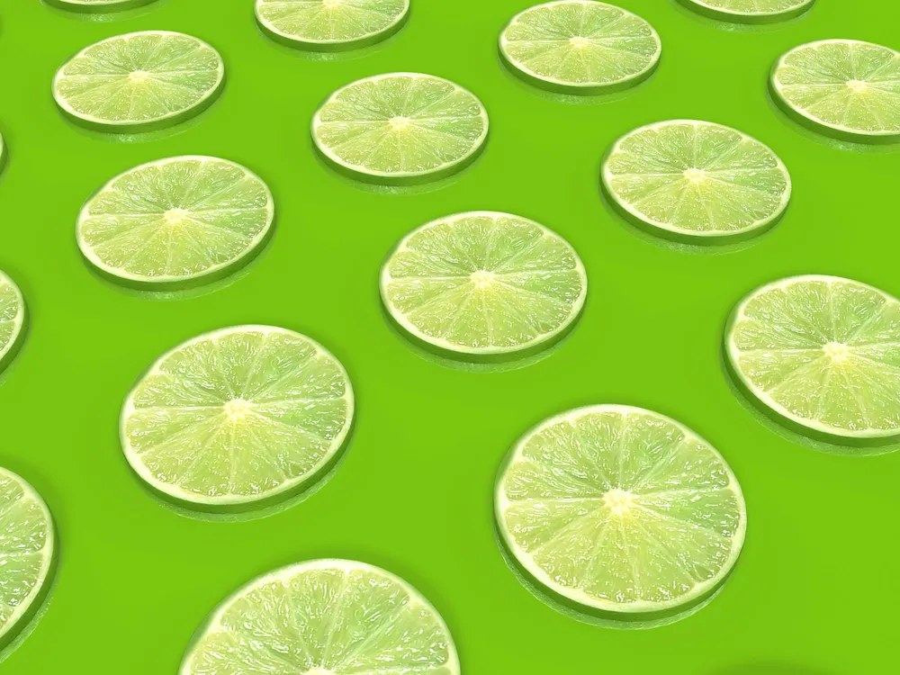

Five ways to work with us.

01
Design service
From moodboard to a live domain, in one to three weeks.

02
Brand upgrade
Your product already runs. We take it from usable to worth sharing.

03
Qbix Labs
Four products from the studio. Two are live and two are on the way.

04
Strata
A moodboard in, a working design system out: tokens, components and code.

05
Practice Website Refresh
A calm website for your practice, rebuilt in one week.